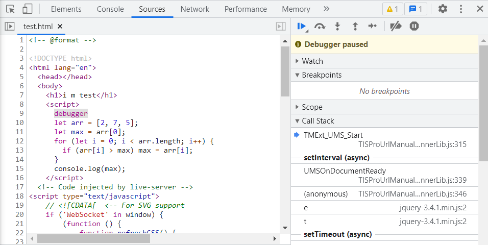
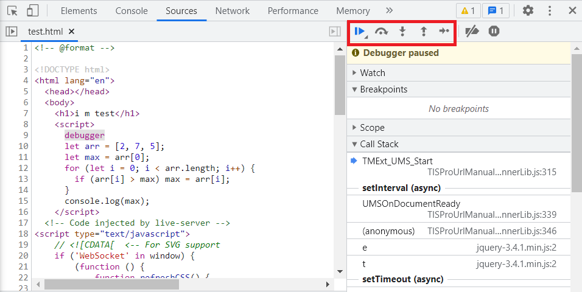
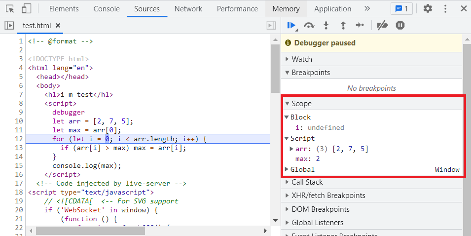

Debug 神器: Debugger
紀錄一下透過胡立大在 Lidemy 平台上 先別急著寫 leetcode 這堂課中所學到的 Chrome Debug 技巧
首先建立一個 html 檔案，並在 <script> 中加入一個 debugger 關鍵字，接著下方可以隨意方進一段範例程式碼
1 | // test.html |
如果是透過 VSCode 可以透過 Live Server 這個 Extension 開啟，或者也可以直接點擊 html 檔案於瀏覽器開啟，開啟後按 F12 開啟開發者工具會自動跳轉到 Sources，並顯示 html 檔案中的程式碼，且會停留在 debugger 這個關鍵字上

接著看到右邊會有一排按鈕，每個按鈕代表一種接下來程式碼執行的方式，最常用的 Step F9，按一下執行一步程式碼，依序一行一行執行

點選 Step 會發現右側 Scope 中會根據當下執行的狀態顯示變數的值，我們就可以藉此為程式碼 Debug 囉
